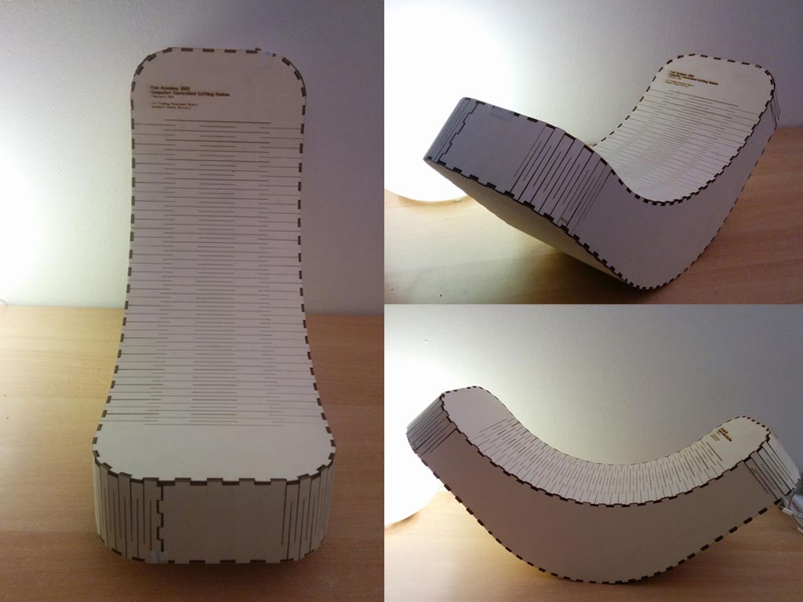
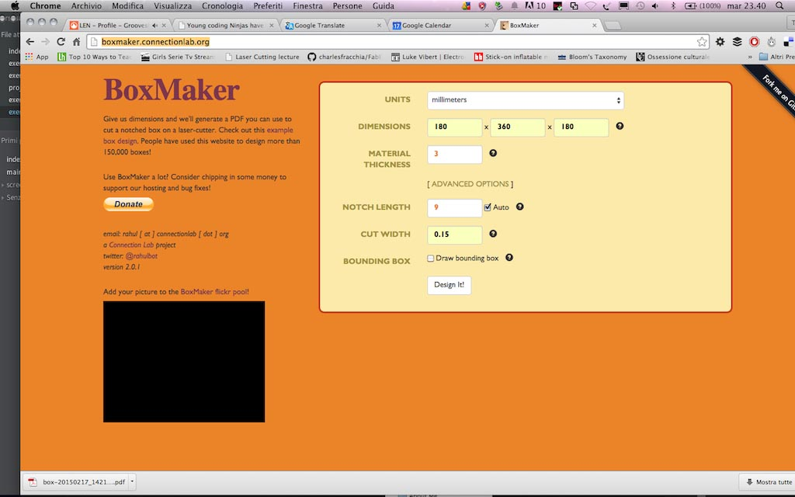
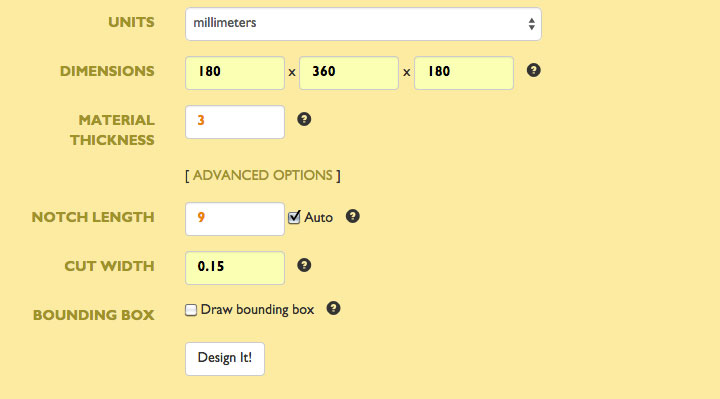
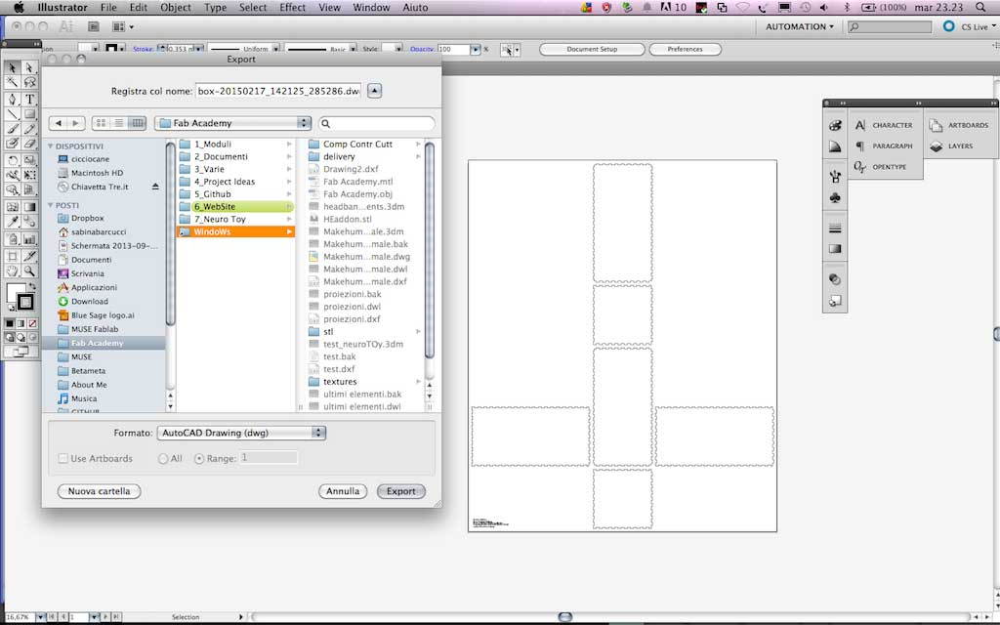
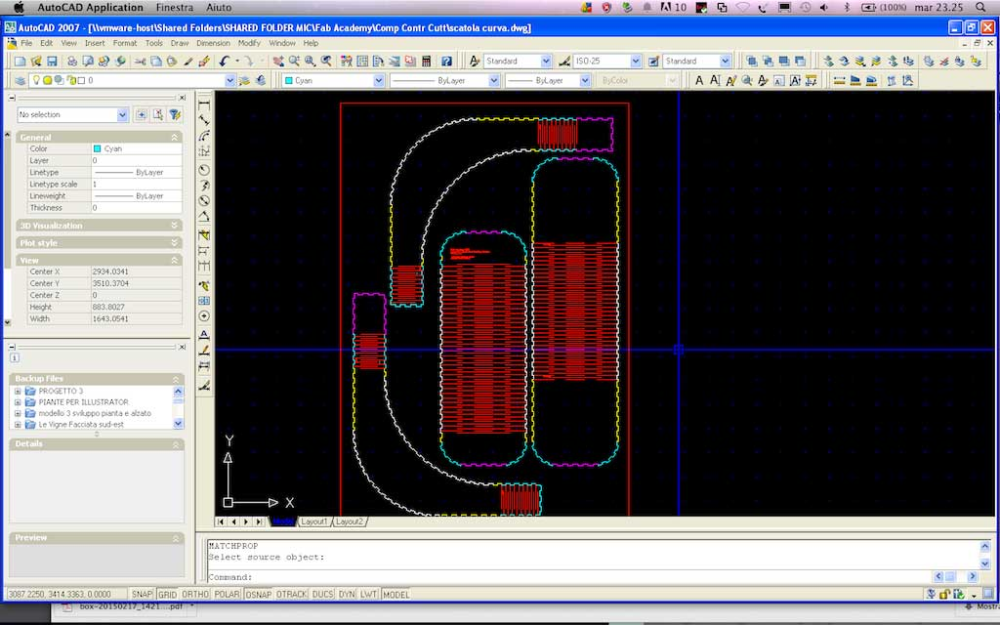
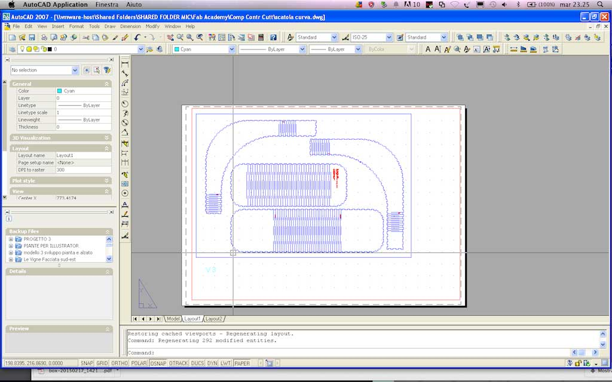
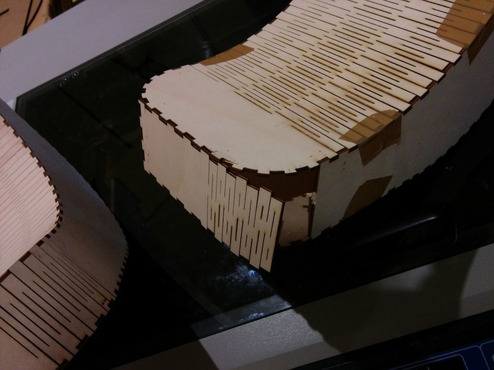
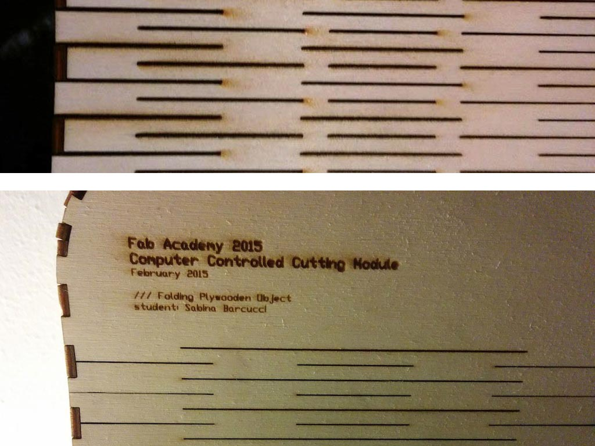
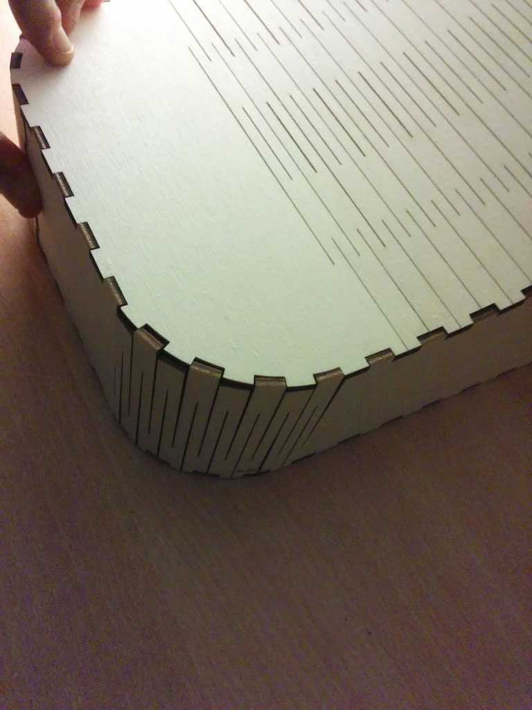

My goal for this module was to develop a tridimensional box in plywood with rounded corners in order to understand how to design notches on curved surfaces. I started thinking on how to work my object using a 3d modeling software. Afterward, I realized that my goal could have been accomplished also design with a cad in 2D.

Before using a CAD, I first understood the general dimensions of the bounding box of my idea. Indeed, the firt element I designed has been a simple box 18x36x18 cm.
I switched on the website of
Box Maker Connection Lab to generate my initial box.
I put all the information about my box in the tabs like in the following image:

I payed attention to the thickness of the availabe material (plywood 3 mm thick), the notches lenght and the cut width (I use an Epilog and the hypotesis was that the cut widht is 0.15 mm). To understand how to set the notches lenght I first worked on the CAD on the curved part of my object and projected by the centre of the circle generating the first curved notches that were about 9 mm lenght. I set the same lenght for the straight notches on the web app.

The software generated a pdf file that I opened in Illustrator and exported as dwg file in order to work on it in Autocad. Infact, to do this job, I needed a tool highly precise, and, since I had few hour to accomplish my goal, I decided to use the one I know better, that is Autocad.

In Autocad I worked mainly on three aspects: bending pattern for curved faces, notches fitting and position for bending faces and notches dimension in order to make the element solid without gluing it.

As the image above shows, I used a color code to distinguish the several elements that had to lock together. So: notches coloured in magenta have to fith notches magenta and so on. I also wrote with a microscopic font the position of the elements for the assembly phase. Once finished the first version of my object, I printed the dwg file with a PDF printer on a scale 1:1, inscribing all the elements in a rectangle with the same dimensions of the Laser Cutter Epilog.

The last passage has been done in illustrator where I edited the lines to be cutted of my drawing. Following the settings I used to edit the lines and to set the Laser Cutter Epilog Legend 36, 60 Watts
////// Lines Settings
CUT
line color black (RGB 0,0,0)
line stroke 0.01 mm
ENGRAVE
fill color red (RGB 255, 0 0)
////// Epilog settings
Color Code
(cutting) RGB 0,0,0 / Speed 30; Power 80; Frequency 500;
(engraving) RGB 255, 0, 0 / Speed 80; Power 60; Frequency 500;
The first prototype coming out from the laser wasn't working at all. It needed a lot of tape to stay together and the bending pattern wasn't performing good. In particular, the bending pattern was very fragile and very stiff.
 With the physical prototypes I was able to quickly understand the most of my problems. I retried with a new version and then a third.
Below the first and the last bending for a confrontation and a details of the curved notches on the bending wood.


Following a recap of my tests until the last version (the third) that I consider the last one. The elements don't require anymore glue to fit. In any case, a fourth version of the object with larger notches would be preferable.